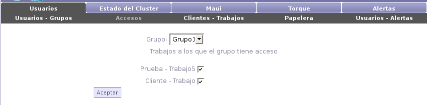

Next: Clientes - Trabajos Up: Usuarios Previous: Usuarios - Grupos Contents

Para administrar los accesos a los trabajos del sistema, se deberá seleccionar un grupo. A continuación se mostrarán todos los pares cliente - trabajo dados de alta en el sistema. Simplemente seleccionando cada casilla se le estará dando acceso a todos los integrantes del grupo a los respectivos trabajos.